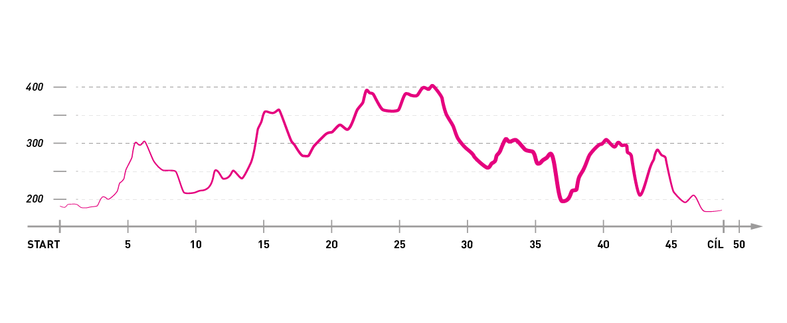

Oproti roku 2017 došlo na trati pro rok 2018 pouze k dílčím úpravám.
Trasa závodu byla určena, vyhrazujeme si však právo na její změny (v případě nenadálých událostí). Místo ostrého startu bude upřesněno, průjezd městem v rámci 16. ročníku závodu neproběhne. Dlouhá trasa T50 nabízí převýšení 920 m, kratší T30 580 m.
Mapa ve formátu PDF ke stažení zde.
Záznam ze společného projetí tratě 2/4/2017 ke stažení zde.
